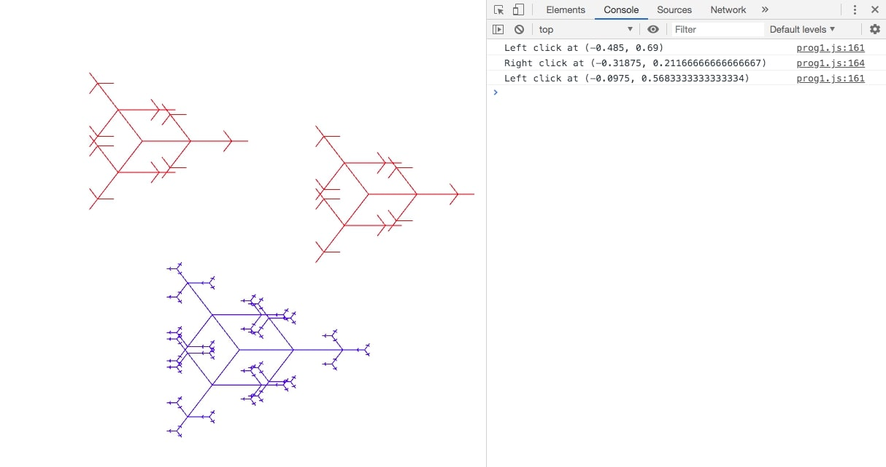

Celine Seghbossian
Login: cseghbos@ucsc.edu
CSE 160 -- Prog 1
Monday, October 14, 2019
List of Files:
/prog1/
prog1.js
driver.html
features.html (this file)
output.jpg
This program implements most of the functionality as specified in the Prog1 Requirements.
However, it does not contain the toggle button for the second view:
-
Create a 3D Tree It's basically a geometric interpretation of sentences produced by a set of
rewriting rules. Using the notation from the wiki page above, our basic tree will be defined by:
variables : 0, 1
constants: a,b,c
axiom : 0
rules : (1 -> 11), (0 -> 1a0b0c0)
where the constants [,] are replaced with a,b,c and their interpretations are replaced with:
a: turn angles alpha = 0, beta = 45
b: turn angles alpha = 120, beta = 45
c: turn angles alpha = 240, beta = 45
With the left click, create a red tree with recursive depth of 4. Use line segments of length 50.
With the right click, create a blue tree with a recursive depth of 6. Use line segments of length 40.
Note that rather than creating unique trees for each mouse click, you may consider creating these two
varieties first and then just instancing them later on.
-
The tree shall be displayed in wireframe. A simple wireframe drawing will show the "skeleton" of the
object by drawing a line segment for each of the tree branch. The leaf is not drawn for now.
The canvas defines our ground. Since we're essentially looking "down" on the canvas, we will be
looking at our trees from the top. Hence, what we see at this point won't look like what's displayed
on the wiki, but rather the top view. That is, the tree grows up along the positive z-axis. We set the
ground coordinates as x-axis is positive going right, and y-axis is positive going up. This creates a
right-handed coordinate system for our virtual world. We will also need to adjust the world coordinates
so that the world origin is at the center of the canvas.
For more information on implementation, please reference function descriptions in prog1.js
Implementation Issues:
The tree(...) function which finds the vertices for each tree has inconsistent L lengths. They have been
adjusted in order to insure the full tree shows clearly in the default view. However, some branches appear
to overlap each other. Due to the inconsistent L values, there is likely an error in implementation.
Link for grader:
driver.html
